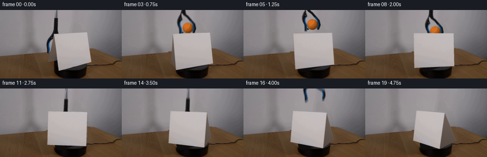
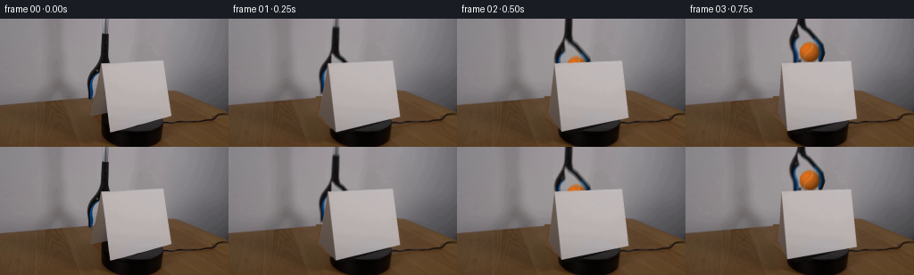
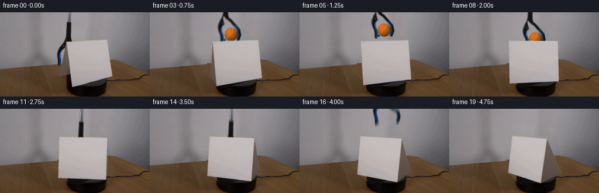
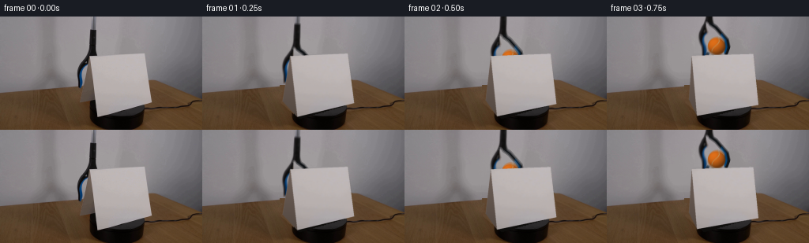

CODING AGENTS AS PIXEL WORLD MODELS
traex/GPT-6-Astra · 0004
点击播放 · 原生 RGB 像素
逐轮保存的候选
回放视频、检查图与代码变化。
每份候选均可单独播放。实际图片检查记录在下方工具轨迹中。
候选 01播放与检查图
点击播放 · 原生 RGB 像素


展开代码变化
--- 上一保存版本
+++ 本次保存版本
@@ -0,0 +1,225 @@
+from pathlib import Path
+import numpy as np
+from PIL import Image, ImageDraw
+import cv2
+from scipy.ndimage import gaussian_filter, map_coordinates
+import artifact_io
+
+ROOT=Path(__file__).resolve().parent
+H,W=144,256
+src=np.array(Image.open(ROOT/'first_frame.png').convert('RGB'))
+S=3
+hh,ww=H*S,W*S
+Y,X=np.mgrid[0:hh,0:ww].astype(np.float32);X=(X+.5)/S-.5;Y=(Y+.5)/S-.5
+rng=np.random.default_rng(409)
+# Measured locations of the paper's front, crease, and far left foot.
+original=np.array([[123.0,127.6],[191.5,108.5],[113.25,50.3],[182.8,46.6],[100.5,108.3],[160.,96.6]],np.float32)
+p=np.array([.38004693,.61042895,229.482293,2.87829172,160.68414253,117.01523462,.81353877,.73574027,.26290592])
+el,ya,f,dist,cx,cy,height,depth,ridge=p
+vertices=np.array([[-.5,0,0],[.5,0,0],[-.5,height,ridge*depth],[.5,height,ridge*depth],[-.5,0,depth],[.5,0,depth]])
+c,s=np.cos(ya),np.sin(ya);ce,se=np.cos(el),np.sin(el)
+R=np.array([[c,0,-s],[-se*s,-ce,-se*c],[ce*s,-se,ce*c]])
+def project(v):
+ q=v@R.T;return q[:,:2]*f/(q[:,2:3]+dist)+[cx,cy],q[:,2]+dist
+baseproj,_=project(vertices)
+residual=original-baseproj
+
+def poly_mask(points,scale=1):
+ m=np.zeros((H*scale,W*scale),np.uint8)
+ cv2.fillPoly(m,[np.rint((np.array(points)+.5)*scale-.5).astype(np.int32)],255)
+ return m.astype(np.float32)/255
+
+# Separate the original tool from the fixed background, including its blue jaw.
+roi=np.zeros((H,W),np.uint8)
+shaftpoly=np.array([[115,0],[123,0],[123,16],[123,43],[124,49],[119,51],[113,52],[112,48],[110,48],[111,44],[112,40],[113,17],[115,15]])
+jawpoly=np.array([[112,46],[123,48],[123,50],[114,53],[114,58],[113,61],[110,63],[107,65],[105,68],[104,74],[105,82],[105,87],[103,91],[99,91],[98,84],[97,78],[96,72],[97,67],[98,63],[101,59],[105,54],[108,51]])
+cv2.fillPoly(roi,[shaftpoly,jawpoly],255)
+# Original background without shaft, useful for extracting photographic edge coverage.
+walltool=src.astype(np.float32).copy()
+for y in range(92):
+ left=src[y,94:97].mean(0);right=src[y,125:129].mean(0) if y<48 else left+2
+ for x in range(96,126):walltool[y,x]=left+(right-left)*(x-96)/30
+alpha=np.zeros((H,W),np.float32)
+yg,xg=np.mgrid[:H,:W]
+for y in range(92):
+ for x in range(95,125):
+ if not roi[y,x]:continue
+ val=src[y,x].astype(float);bg=walltool[y,x]
+ if y<17:
+ a=np.clip(np.max(abs(val-bg))/35,0,1)
+ else:
+ # Dark jaws and steel shaft: retain photographic edge antialiasing.
+ a=np.clip((bg.mean()-val.mean())/max(bg.mean()-25,1),0,1)
+ if val.mean()<95 or val[2]-val[0]>15:a=1.
+ alpha[y,x]=a
+# Remove incidental brown card pixels from the extraction.
+alpha[(yg>=51)&(xg>=113)]=0
+alpha[(yg>=61)&(xg>=111)]=0
+alpha[(yg>=64)&(xg>=108)]=0
+alpha[(yg>=66)&(xg>=106)]=0
+alpha[(yg>=70)&(xg>=105)]=0
+alpha[(yg>=89)&(xg>=104)]=0
+toolrgb=np.clip((src.astype(float)-walltool*(1-alpha[:,:,None]))/np.maximum(alpha[:,:,None],.01),0,255).astype(np.float32)
+toolprem=toolrgb*alpha[:,:,None]
+
+# Reconstruct only pixels hidden by the moving paper and tool.
+# Nearby untouched wall and timber provide all texture and colour information.
+clean=src.astype(np.float32).copy()
+cardmask=np.maximum(poly_mask(original[[0,1,3,2]]),poly_mask(original[[0,2,4]]))
+remove=cv2.dilate(np.maximum(cardmask,alpha),(np.ones((3,3),np.uint8)))
+background=np.zeros_like(clean)
+for y in range(H):
+ for x in range(W):
+ edge=97.0-.087*x
+ if y < edge-1.5:
+ if y<47:
+ col=walltool[y,x] if 96<=x<=125 else src[y,x].astype(float)
+ else:
+ left=src[y,92:96].mean(0)
+ right=src[y,193:197].mean(0) if y<79 else src[min(y,79),193:197].mean(0)-(y-79)*.7
+ xx=np.clip((x-94)/101,0,1)
+ col=left*(1-xx)+right*xx+np.sin(np.pi*xx)*np.array([6,5.5,5])
+ background[y,x]=col
+ else:
+ # Sample actual fine timber grain and gently continue its lighting gradient.
+ sx=65+(x-100)%35
+ sy=max(96,min(y+4,143))
+ noise=src[sy,sx].astype(float)-cv2.GaussianBlur(src.astype(np.float32),(0,0),2)[sy,sx]
+ col=np.array([95,70,46.5])+[.045*(x-135),.045*(x-135),.025*(x-135)]
+ col+=np.array([1.3,1.1,.8])*np.sin(.09*x+.055*y)
+ background[y,x]=col+noise*.6
+# Back of the low black platform underneath the paper.
+platform=poly_mask([[114,108],[161,96],[176,103],[182,117],[176,135],[164,143],[138,143],[117,134]])
+platform=cv2.GaussianBlur(platform,(0,0),.35)
+shade=np.clip((yg-98)/40,0,1)
+platcol=np.stack([23-13*shade,21-12*shade,20-13*shade],axis=-1)
+background=background*(1-platform[:,:,None])+platcol*platform[:,:,None]
+# Feather only the outside of the reconstructed region.
+remove=cv2.GaussianBlur(remove,(0,0),.45)
+clean=src*(1-remove[:,:,None])+background*remove[:,:,None]
+# Preserve every already-visible platform and table pixel away from the objects.
+base=cv2.resize(clean,(ww,hh),interpolation=cv2.INTER_CUBIC)
+
+# Rectified real paper texture, sampled inside the measured edges.
+front_ids=[2,3,1,0]
+quad=original[front_ids]
+texW,texH=240,270
+rect=np.array([[0,0],[texW-1,0],[texW-1,texH-1],[0,texH-1]],np.float32)
+M=cv2.getPerspectiveTransform(quad,rect)
+texture=cv2.warpPerspective(src.astype(np.float32),M,(texW,texH),flags=cv2.INTER_LINEAR)
+# Extend interior texture over the one-pixel mixed boundary.
+texture[:5]=texture[5:6];texture[-5:]=texture[-6:-5]
+texture[:,:5]=texture[:,5:6];texture[:,-5:]=texture[:,-6:-5]
+texture=cv2.GaussianBlur(texture,(0,0),.45)
+# Small continuous matte shading, no new objects or background motion.
+fuzz=rng.normal(0,1,(hh,ww)).astype(np.float32)
+
+def overlay(im,col,a):
+ return im*(1-a[...,None])+col*a[...,None]
+
+def paper(im,angle):
+ a=np.deg2rad(angle)
+ rotation=np.array([[np.cos(a),0,-np.sin(a)],[0,1,0],[np.sin(a),0,np.cos(a)]])
+ center=np.array([0,0,depth/2])
+ v=(vertices-center)@rotation.T+center
+ pts,z=project(v)
+ pts+=residual*np.cos(a)
+ # The open ends are shaded as in the reference. Hidden faces are depth sorted.
+ faces=[([0,2,4],'end'),([1,5,3],'end'),([2,3,5,4],'back'),([2,3,1,0],'front')]
+ for ids,kind in sorted(faces,key=lambda it:np.mean(z[it[0]]),reverse=True):
+ q=pts[ids].astype(np.float32)
+ mask=poly_mask(q,S)
+ mask=cv2.GaussianBlur(mask,(0,0),.65)
+ if kind in ('front','back'):
+ trans=cv2.getPerspectiveTransform(rect,((q+.5)*S-.5).astype(np.float32))
+ col=cv2.warpPerspective(texture,trans,(ww,hh),flags=cv2.INTER_LINEAR,borderMode=cv2.BORDER_REPLICATE)
+ mult=1.0+.035*np.sin(-a) if kind=='front' else .84+.09*np.sin(-a)
+ col=col*mult
+ else:
+ sh=np.clip((Y-48)/80,0,1)
+ col=np.stack([112-30*sh,97-26*sh,89-25*sh],-1)+fuzz[...,None]*.35
+ im=overlay(im,col,mask)
+ return im
+
+def ball(im,bx,by,r=11.3):
+ nx=(X-bx)/r;ny=(Y-by)/r
+ d2=nx*nx+ny*ny
+ nz=np.sqrt(np.maximum(0,1-d2))
+ coverage=np.clip((1-np.sqrt(d2))*r*S+.5,0,1)
+ lum=np.clip(-.37*nx-.48*ny+.79*nz,0,1)
+ shade=.45+.55*lum
+ col=np.stack([214*shade+10,103*shade+8,20*shade+5],-1)
+ # Spherical tennis-ball seam, cream fibre instead of a flat painted circle.
+ curve=nx+.43*np.sin(ny*2.7)+.18*nz
+ seam=np.exp(-(curve/.046)**2)*.80
+ col=col*(1-seam[...,None])+np.stack([191*shade+12,173*shade+9,127*shade+6],-1)*seam[...,None]
+ grain=np.sin(nx*133+ny*31)*np.sin(ny*147-nx*19)+np.sin(nx*79+ny*113)*.5
+ col+=grain[...,None]*2.2
+ return overlay(im,col,coverage)
+
+# Complete the hidden right jaw analytically, matching the photographic blue-black left one.
+def drawn_tool(im,dx,dy,close,opening=0):
+ # Remap the photographic tool, closing the lower jaw around the sphere.
+ yy=Y-dy
+ xx=X-dx-close*np.clip((yy-52)/25,0,1)
+ prem=cv2.remap(toolprem,xx.astype(np.float32),yy.astype(np.float32),cv2.INTER_LINEAR,borderMode=cv2.BORDER_CONSTANT)
+ al=cv2.remap(alpha,xx.astype(np.float32),yy.astype(np.float32),cv2.INTER_LINEAR,borderMode=cv2.BORDER_CONSTANT)
+ # Continue the metal shaft beyond the source's upper edge while descending.
+ shaftx=118.3+dx
+ ext=np.clip((2.4-abs(X-shaftx))*S+.5,0,1)*(Y<dy)
+ shade=np.stack([112+18*np.cos((X-shaftx)*1.1),111+18*np.cos((X-shaftx)*1.1),120+19*np.cos((X-shaftx)*1.1)],-1)
+ im=overlay(im,shade,ext)
+ # The source's opposite jaw is behind the paper in frame zero.
+ lay=np.zeros((hh,ww,4),np.uint8)
+ def path(points,color,width):
+ q=np.rint((np.array(points)+[dx,dy]+.5)*S-.5).astype(np.int32)
+ cv2.polylines(lay,[q],False,(*color,255),max(1,int(width*S)),cv2.LINE_AA)
+ right=[(118,48),(125,53),(132,61),(139+opening,69),(141+opening,78),(138+opening,86)]
+ path(right,(17,20,23),4)
+ path([(132,62),(137+opening,69),(138.5+opening,78),(136.5+opening,85)],(6,64,112),1.9)
+ # Narrow pads grip the ball, with both tips releasing together.
+ path([(101+close,84),(106+close-opening*.3,87)],(10,31,49),2.6)
+ la=lay[:,:,3].astype(np.float32)/255
+ im=overlay(im,lay[:,:,:3].astype(float),la)
+ return im*(1-al[...,None])+prem
+
+def smooth(a):return a*a*(3-2*a)
+def position(t):
+ # The ball starts screened by the cardstock, rises into view in the gripper,
+ # then is gently lowered to the tabletop on the far side and released.
+ if t<1.0:
+ u=smooth(t/1.0);dx=15*u;dy=-47*u;close=11*u
+ elif t<1.45:
+ u=smooth((t-1)/.45);dx=15+6*u;dy=-47;close=11
+ elif t<3.15:
+ u=smooth((t-1.45)/1.7);dx=21;dy=-47+61*u;close=11
+ else:
+ u=smooth(np.clip((t-3.3)/1.1,0,1));dx=21+3*u;dy=14-112*u;close=11-6*u
+ return dx,dy,close
+
+def render(t):
+ im=base.copy()
+ dx,dy,close=position(t)
+ bx=126+min(dx,21);by=77+dy if t<3.15 else 91
+ if t>=3.15:bx=147
+ im=ball(im,bx,by)
+ opening=6*smooth(np.clip((t-3.15)/.25,0,1))
+ im=drawn_tool(im,dx,dy,close,opening)
+ # Smooth, unidirectional clockwise paper rotation about the table normal.
+ ang=-min(74,15.6*t)
+ im=paper(im,ang)
+ return cv2.resize(np.clip(im,0,255).astype(np.float32),(W,H),interpolation=cv2.INTER_AREA)
+
+def main():
+ frames=[src]
+ for i in range(1,20):
+ t=i/4
+ # Short shutter integrates motion without changing the constant capture rate.
+ frame=(render(t-.022)+render(t)+render(t+.022))/3
+ frames.append(np.clip(np.rint(frame),0,255).astype(np.uint8))
+ frames=np.stack(frames)
+ assert np.array_equal(frames[0],src)
+ artifact_io.save(frames,ROOT)
+ np.save(ROOT/'.tmp'/'rgb_video.npy',frames)
+
+if __name__=='__main__':main()
候选 02播放与检查图
点击播放 · 原生 RGB 像素


展开代码变化
--- 上一保存版本
+++ 本次保存版本
@@ -68,6 +68,7 @@
cardmask=np.maximum(poly_mask(original[[0,1,3,2]]),poly_mask(original[[0,2,4]]))
remove=cv2.dilate(np.maximum(cardmask,alpha),(np.ones((3,3),np.uint8)))
background=np.zeros_like(clean)
+softsource=cv2.GaussianBlur(src.astype(np.float32),(0,0),2)
for y in range(H):
for x in range(W):
edge=97.0-.087*x
@@ -84,7 +85,7 @@
# Sample actual fine timber grain and gently continue its lighting gradient.
sx=65+(x-100)%35
sy=max(96,min(y+4,143))
- noise=src[sy,sx].astype(float)-cv2.GaussianBlur(src.astype(np.float32),(0,0),2)[sy,sx]
+ noise=src[sy,sx].astype(float)-softsource[sy,sx]
col=np.array([95,70,46.5])+[.045*(x-135),.045*(x-135),.025*(x-135)]
col+=np.array([1.3,1.1,.8])*np.sin(.09*x+.055*y)
background[y,x]=col+noise*.6
@@ -208,7 +209,11 @@
# Smooth, unidirectional clockwise paper rotation about the table normal.
ang=-min(74,15.6*t)
im=paper(im,ang)
- return cv2.resize(np.clip(im,0,255).astype(np.float32),(W,H),interpolation=cv2.INTER_AREA)
+ occupied=cv2.resize((np.max(np.abs(im-base),axis=2)>.01).astype(np.float32),(W,H),interpolation=cv2.INTER_AREA)>0
+ out=cv2.resize(np.clip(im,0,255).astype(np.float32),(W,H),interpolation=cv2.INTER_AREA)
+ # Keep the original photographic background byte-stable away from motion.
+ out[~occupied]=clean[~occupied]
+ return out
def main():
frames=[src]
可观测工具轨迹
实际执行的命令与返回图片。
命令 1exit 0
/bin/bash -lc 'ls -la && cat prompt.txt && cat GENERATION_RULES.md'
命令 2exit 0
/bin/bash -lc "cat artifact_io.py && python - <<'PY'
from PIL import Image
import numpy as np
im=np.array(Image.open('first_frame.png'))
print('shape',im.shape)
print('range',im.min((0,1)),im.max((0,1)))
# coarse RGB grid
im=np.array(Image.fromarray(im).resize((32,18)))
for y,row in enumerate(im): print(y, ' '.join('%02x%02x%02x'%tuple(v) for v in row))
PY"命令 3exit 1
/bin/bash -lc "python - <<'PY'
from PIL import Image
import numpy as np
im=np.array(Image.open('first_frame.png')).astype(float)
palette=' .,:;irsXA253hMHGS#9B&@'
gray=np.array(Image.fromarray(im.astype('uint8')).convert('L').resize((128,72)))
for y,r in enumerate(gray): print('%3d'% (2*y)+''.join(palette[min(len(palette)-1,int(v)/200.__class__(200)*(len(palette)-1).__int__())] for v in [])) if False else print('%3d'% (2*y)+''.join(palette[min(len(palette)-1,int(v)*(len(palette)-1)//200)] for v in r))
print('colorful pixels upper part')
r,g,b=im.transpose(2,0,1)
mask=(r>g*1.25)&(r>b*1.4)&(r>70)&(np.indices(r.shape)[0]<94)
y,x=np.where(mask)
print('number',len(x),'bounds', (x.min(),y.min(),x.max(),y.max()) if len(x) else '')
for j in range(0,94,2):
xx=np.where(mask[j])[0]
if len(xx): print(j,xx.tolist(), im[j,xx].astype(int).tolist())
PY"命令 4exit 0
/bin/bash -lc "python - <<'PY'
from PIL import Image
import numpy as np
im=np.array(Image.open('first_frame.png')).astype(float)
palette=' .,:;irsXA253hMHGS#9B&@'
gray=np.array(Image.fromarray(im.astype('uint8')).convert('L').resize((128,72)))
for y,row in enumerate(gray): print('%3d'% (2*y)+''.join(palette[min(len(palette)-1,int(v)*(len(palette)-1)//200)] for v in row))
print('colorful pixels upper part')
r,g,b=im.transpose(2,0,1)
mask=(r>g*1.25)&(r>b*1.4)&(r>70)&(np.indices(r.shape)[0]<94)
y,x=np.where(mask)
print('number',len(x),'bounds', (x.min(),y.min(),x.max(),y.max()) if len(x) else '')
for j in range(0,94,2):
xx=np.where(mask[j])[0]
if len(xx): print(j,xx.tolist(), im[j,xx].astype(int).tolist())
PY"命令 5exit 0
/bin/bash -lc "python - <<'PY'
from PIL import Image
import numpy as np
im=np.array(Image.open('first_frame.png'))
for y in range(40,104,2):
print('%3d'%y,' '.join('%3d/%3d/%3d'%tuple(im[y,x]) for x in range(94,128,2)))
PY"命令 6exit 0
/bin/bash -lc "python - <<'PY'
from PIL import Image
import numpy as np
from scipy.ndimage import gaussian_filter
im=np.array(Image.open('first_frame.png'))
for y in range(44,134,2):
xs=np.where((im[y,:,0]>160)&(np.arange(256)>104))[0]
if len(xs): print(y, xs.min(),xs.max())
# full-res luminance characters region x88:198, y42:134
im=im[42:134,88:198]
palette=' .:-=+*#%@'
for y,row in enumerate(im):
if y%2: continue
print('%3d'%(y+42)+''.join(palette[min(9,int(v.mean())*10//200)] for v in row))
# gradient maxima per row
PY"命令 7exit 0
/bin/bash -lc "python - <<'PY'
from PIL import Image
import numpy as np
im=np.array(Image.open('first_frame.png'))
for y in range(0,92,2):
vals=[]
for x in range(92,128):
c=im[y,x];
if c.mean()<100 or int(c[2])-int(c[0])>10: vals.append(x)
if vals: print(y,vals)
print('First row shaft rgb',[(x,im[0,x].tolist()) for x in range(110,125)])
# Availability
import cv2, scipy
print(cv2.__version__)
PY"命令 8exit 0
/bin/bash -lc "python - <<'PY'
from PIL import Image
import numpy as np
im=np.array(Image.open('first_frame.png')).astype(float)
for y in range(100,144):
s=''
for x in range(90,201):
r,g,b=im[y,x]
if r<25 and g<25:s+='K'
elif r<50 and g<40:s+='k'
elif r-g>15 and r-b>30:s+='w'
elif r>140:s+='C'
elif r>110:s+='c'
elif r-g>7 and b<g:s+='s'
else:s+='.'
print(y,s)
# gradients corners
for x,y in [(114,50),(182,46),(191,109),(124,127),(104,106),(160,132),(116,110)]: print(x,y,im[y,x])
PY"命令 9exit 0
/bin/bash -lc "python - <<'PY'
import numpy as np
p=np.array([[113.8,50.9],[182.6,46.5],[191.5,108.1],[123.7,127.2]])
a=np.cross(np.cross([*p[0],1],[*p[3],1]),np.cross([*p[1],1],[*p[2],1])); print('vertical vanish',a/a[2])
b=np.cross(np.cross([*p[0],1],[*p[1],1]),np.cross([*p[2],1],[*p[3],1])); print('horizontal vanish',b/b[2])
PY"命令 10exit 0
/bin/bash -lc "python - <<'PY'
from PIL import Image
import numpy as np
im=np.array(Image.open('first_frame.png'))
for y in [49,53,60,70,80,90,100,104,106,108]:
print('\\ny',y)
for x in range(100,125): print(x,tuple(im[y,x]),end='; ')
print()
PY"命令 11exit 0
/bin/bash -lc "cat > .tmp/geometry.py <<'PY'
import numpy as np, cv2
from scipy.optimize import least_squares
img=np.array([[123.4,127.4],[191.4,108.5],[113.3,50.5],[182.7,46.7],[100.7,108.3]],float)
# x-right, y-up, z toward tent rear
K=np.array([[230,0,128],[0,230,72],[0,0,1]],float)
def vertices(h,d):return np.array([[-.5,0,-d/2],[.5,0,-d/2],[-.5,h,0],[.5,h,0],[-.5,0,d/2],[.5,0,d/2]],float)
def proj(p):
r,t,h,d=p[:3],p[3:6],p[6],p[7]
return cv2.projectPoints(vertices(h,d),r,t,K,None)[0][:,0,:]
def err(p):return np.r_[(proj(p)[:5]-img).ravel(),(p[6]-.90)*.5,(p[7]-.42)*.5]
p=np.r_[[2.7,-.2,-.8],[.3,-.45,3],.9,.4]
s=least_squares(err,p,bounds=([-6,-6,-6,-4,-4,1,.4,.05],[6,6,6,4,4,10,2,2]),max_nfev=2000)
print('fit',s.cost,s.x,proj(s.x));
r,t,h,d=s.x[:3],s.x[3:6],s.x[6],s.x[7]
R=cv2.Rodrigues(r)[0]
print('R',R,'center',cv2.projectPoints(np.array([[0.,0.,0.]]),r,t,K,None)[0]);print('cam vertices',vertices(h,d)@R.T+t)
for theta in [0,20,40,60,80,100,120]:
a=np.deg2rad(theta); rot=np.array([[np.cos(a),0,np.sin(a)],[0,1,0],[-np.sin(a),0,np.cos(a)]])
q=vertices(h,d)@rot.T
print(theta,cv2.projectPoints(q,r,t,K,None)[0][:,0,:].round(1))
np.savez('.tmp/geometry.npz',p=s.x,K=K)
PY
python .tmp/geometry.py"命令 12exit 0
/bin/bash -lc "sed 's/\\[\\[230,0,128\\],\\[0,230,72\\]/[[105,0,128],[0,105,72]/' .tmp/geometry.py > .tmp/geometry2.py; python .tmp/geometry2.py"
命令 13exit 0
/bin/bash -lc "python - <<'PY'
p=open('.tmp/geometry.py').read();p=p.replace('(proj(p)[:5]-img).ravel()','(proj(p)[:4]-img[:4]).ravel()');open('.tmp/geometry3.py','w').write(p)
PY
python .tmp/geometry3.py"命令 14exit 0
/bin/bash -lc "cat > .tmp/fit.py <<'PY'
import numpy as np, cv2
from scipy.optimize import least_squares
img=np.array([[123.4,127.4],[191.4,108.5],[113.3,50.5],[182.7,46.7],[100.7,108.3]],float)
def verts(p):
h,d,off=p[6:9]; return np.array([[-.5,0,0],[.5,0,0],[-.5,h,off],[.5,h,off],[-.5,0,d],[.5,0,d]])
def proj(p,v=None):
K=np.array([[p[9],0,128],[0,p[9],72],[0,0,1]])
if v is None:v=verts(p)
return cv2.projectPoints(v,p[:3],p[3:6],K,None)[0][:,0,:]
def err(p):return np.r_[(proj(p)[:5]-img).ravel(), (p[6]-.95)*.1,(p[7]-.5)*.1,(p[8]-.25)*.1,(p[9]-180)*.001]
best=None
for yaw in [-1,-.5,0,.5,1]:
p=np.r_[[2.6,.1,yaw],[.2,.7,3],.95,.5,.25,180]
sol=least_squares(err,p,bounds=([-6,-6,-6,-4,-4,.6,.4,.1,0,70],[6,6,6,4,4,10,1.6,1.8,1.4,700]),max_nfev=1800)
if best is None or sol.cost<best.cost:best=sol
print(best.cost,best.x,proj(best.x),sep='\\n')
np.savez('.tmp/fit.npz',p=best.x)
p=best.x
for a in [0,10,20,30,45,60,90]:
a=np.deg2rad(a);rot=np.array([[np.cos(a),0,np.sin(a)],[0,1,0],[-np.sin(a),0,np.cos(a)]])
v=verts(p);center=np.array([0,0,p[7]/2]); v=(v-center)@rot.T+center
print(a*180/np.pi,proj(p,v).round(2))
PY
OPENBLAS_NUM_THREADS=1 python .tmp/fit.py"命令 15exit 0
/bin/bash -lc "python - <<'PY'
p=open('.tmp/fit.py').read().replace('[2.6,.1,yaw]','[3.65,.1,yaw]').replace('p[9]-180','p[9]-220').replace('1.8,1.4,700','1.2,1.0,700').replace('[-6,-6,-6,-4,-4,.6,.4,.1,0,70]','[-6,-6,-6,-4,-4,.6,.4,.1,0,120]')
open('.tmp/fit2.py','w').write(p)
PY
OPENBLAS_NUM_THREADS=1 python .tmp/fit2.py"命令 16exit 0
/bin/bash -lc "python - <<'PY'
exec(open('.tmp/geometry3.py').read().split('for theta')[0])
b=np.array([0,0,-d/2]); v=vertices(h,d)[:4]
for angle in [-50,-35,-20,-10,0,10,20,30,45,60]:
a=np.deg2rad(angle);rot=np.array([[np.cos(a),0,np.sin(a)],[0,1,0],[-np.sin(a),0,np.cos(a)]])
vv=(v-b)@rot.T+b
q=cv2.projectPoints(vv,r,t,K,None)[0][:,0,:]
print(angle,q.round(1))
PY"命令 17exit 0
/bin/bash -lc "cat > .tmp/physical.py <<'PY'
import numpy as np
from scipy.optimize import least_squares
img=np.array([[123.4,127.4],[191.4,108.5],[113.3,50.5],[182.7,46.7],[100.7,108.3]],float)
def verts(p):
el,ya,f,dist,cx,cy,h,d,r=p
return np.array([[-.5,0,0],[.5,0,0],[-.5,h,r*d],[.5,h,r*d],[-.5,0,d],[.5,0,d]])
def proj(p,v=None):
el,ya,f,dist,cx,cy,h,d,r=p
if v is None:v=verts(p)
c,s=np.cos(ya),np.sin(ya);ce,se=np.cos(el),np.sin(el)
R=np.array([[c,0,-s],[-se*s,-ce,-se*c],[ce*s,-se,ce*c]])
q=v@R.T;return q[:,:2]*f/(q[:,2:3]+dist)+[cx,cy]
def err(p):return np.r_[(proj(p)[:5]-img).ravel(),(p[6]-.95)*.1,(p[7]-.65)*.1,(p[8]-.5)*.1,(p[2]-200)*.0001]
p=[.4,.45,220,3,158,118,.95,.65,.5]
s=least_squares(err,p,bounds=([.05,-1,70,.5,100,80,.4,.1,.1],[1.2,1.3,900,12,200,160,1.8,1.5,.9]),max_nfev=3000)
print(s.cost,s.x,proj(s.x),sep='\\n');np.savez('.tmp/physical.npz',p=s.x)
for angle in [0,10,20,30,45,60,90]:
a=np.deg2rad(angle);rot=np.array([[np.cos(a),0,-np.sin(a)],[0,1,0],[np.sin(a),0,np.cos(a)]])
v=verts(s.x);center=np.array([0,0,s.x[7]/2]); v=(v-center)@rot.T+center
print(angle,proj(s.x,v).round(2))
PY
OPENBLAS_NUM_THREADS=1 python .tmp/physical.py"命令 18exit 0
/bin/bash -lc "python - <<'PY'
exec(open('.tmp/physical.py').read().split('p=[.4')[0])
p=np.load('.tmp/physical.npz')['p']
for angle in [-15,-30,-45,-60,-75,-90,-110,-135]:
a=np.deg2rad(angle);rot=np.array([[np.cos(a),0,-np.sin(a)],[0,1,0],[np.sin(a),0,np.cos(a)]])
v=verts(p);center=np.array([0,0,p[7]/2]); v=(v-center)@rot.T+center
print(angle,proj(p,v).round(1))
PY"命令 19exit 0
/bin/bash -lc "python - <<'PY'
exec(open('.tmp/physical.py').read().split('p=[.4')[0]);p=np.load('.tmp/physical.npz')['p'];
for x in [0,.2,.35,.5]:
print(x,proj(p,np.array([[x,.15,1.2],[x,1.1,1.2],[x,0,1.2]])))
PY"命令 20exit 0
/bin/bash -lc "python - <<'PY'
import numpy as np
from PIL import Image
im=np.array(Image.open('first_frame.png')).astype(float)
for x in [0,20,40,60,80,90,100,110,125,150,175,188,195,210,230,250]:
r,g,b=im[:,x].T;m=(r-g>17)&(g-b>12);ys=np.where(m)[0];print(x,ys[0] if len(ys) else None,im[75:101:5,x].astype(int).tolist())
PY"命令 21exit 0
/bin/bash -lc "python - <<'PY'
p=open('.tmp/physical.py').read().replace('el,ya,f,dist,cx,cy,h,d,r=p','el,ya,f,dist,cx,cy,h,d,r,roll=p').replace('q=v@R.T;return q[:,:2]*f/(q[:,2:3]+dist)+[cx,cy]','q=v@R.T; uv=q[:,:2]*f/(q[:,2:3]+dist); co,si=np.cos(roll),np.sin(roll); return uv @ np.array([[co,si],[-si,co]])+[cx,cy]').replace('p=[.4,.45,220,3,158,118,.95,.65,.5]','p=[.4,.45,220,3,158,118,.95,.65,.5,0]').replace('80,.4,.1,.1]','80,.4,.1,.1,-.2]').replace('160,1.8,1.5,.9]','160,1.8,1.5,.9,.2]')
open('.tmp/physical2.py','w').write(p)
PY
python .tmp/physical2.py"命令 22exit 0
/bin/bash -lc "python .tmp/physical.py > .tmp/physical_output.txt; cat > generate.py <<'PY'
from pathlib import Path
import numpy as np
from PIL import Image, ImageDraw
import cv2
from scipy.ndimage import gaussian_filter, map_coordinates
import artifact_io
ROOT=Path(__file__).resolve().parent
H,W=144,256
src=np.array(Image.open(ROOT/'first_frame.png').convert('RGB'))
S=3
hh,ww=H*S,W*S
Y,X=np.mgrid[0:hh,0:ww].astype(np.float32);X=(X+.5)/S-.5;Y=(Y+.5)/S-.5
rng=np.random.default_rng(409)
# Measured locations of the paper's front, crease, and far left foot.
original=np.array([[123.0,127.6],[191.5,108.5],[113.25,50.3],[182.8,46.6],[100.5,108.3],[160.,96.6]],np.float32)
p=np.array([.38004693,.61042895,229.482293,2.87829172,160.68414253,117.01523462,.81353877,.73574027,.26290592])
el,ya,f,dist,cx,cy,height,depth,ridge=p
vertices=np.array([[-.5,0,0],[.5,0,0],[-.5,height,ridge*depth],[.5,height,ridge*depth],[-.5,0,depth],[.5,0,depth]])
c,s=np.cos(ya),np.sin(ya);ce,se=np.cos(el),np.sin(el)
R=np.array([[c,0,-s],[-se*s,-ce,-se*c],[ce*s,-se,ce*c]])
def project(v):
q=v@R.T;return q[:,:2]*f/(q[:,2:3]+dist)+[cx,cy],q[:,2]+dist
baseproj,_=project(vertices)
residual=original-baseproj
def poly_mask(points,scale=1):
m=np.zeros((H*scale,W*scale),np.uint8)
cv2.fillPoly(m,[np.rint((np.array(points)+.5)*scale-.5).astype(np.int32)],255)
return m.astype(np.float32)/255
# Separate the original tool from the fixed background, including its blue jaw.
roi=np.zeros((H,W),np.uint8)
shaftpoly=np.array([[115,0],[123,0],[123,16],[123,43],[124,49],[119,51],[113,52],[112,48],[110,48],[111,44],[112,40],[113,17],[115,15]])
jawpoly=np.array([[112,46],[123,48],[123,50],[114,53],[114,58],[113,61],[110,63],[107,65],[105,68],[104,74],[105,82],[105,87],[103,91],[99,91],[98,84],[97,78],[96,72],[97,67],[98,63],[101,59],[105,54],[108,51]])
cv2.fillPoly(roi,[shaftpoly,jawpoly],255)
# Original background without shaft, useful for extracting photographic edge coverage.
walltool=src.astype(np.float32).copy()
for y in range(92):
left=src[y,94:97].mean(0);right=src[y,125:129].mean(0) if y<48 else left+2
for x in range(96,126):walltool[y,x]=left+(right-left)*(x-96)/30
alpha=np.zeros((H,W),np.float32)
yg,xg=np.mgrid[:H,:W]
for y in range(92):
for x in range(95,125):
if not roi[y,x]:continue
val=src[y,x].astype(float);bg=walltool[y,x]
if y<17:
a=np.clip(np.max(abs(val-bg))/35,0,1)
else:
# Dark jaws and steel shaft: retain photographic edge antialiasing.
a=np.clip((bg.mean()-val.mean())/max(bg.mean()-25,1),0,1)
if val.mean()<95 or val[2]-val[0]>15:a=1.
alpha[y,x]=a
# Remove incidental brown card pixels from the extraction.
alpha[(yg>=51)&(xg>=113)]=0
alpha[(yg>=61)&(xg>=111)]=0
alpha[(yg>=64)&(xg>=108)]=0
alpha[(yg>=66)&(xg>=106)]=0
alpha[(yg>=70)&(xg>=105)]=0
alpha[(yg>=89)&(xg>=104)]=0
toolrgb=np.clip((src.astype(float)-walltool*(1-alpha[:,:,None]))/np.maximum(alpha[:,:,None],.01),0,255).astype(np.float32)
toolprem=toolrgb*alpha[:,:,None]
# Reconstruct only pixels hidden by the moving paper and tool.
# Nearby untouched wall and timber provide all texture and colour information.
clean=src.astype(np.float32).copy()
cardmask=np.maximum(poly_mask(original[[0,1,3,2]]),poly_mask(original[[0,2,4]]))
remove=cv2.dilate(np.maximum(cardmask,alpha),(np.ones((3,3),np.uint8)))
background=np.zeros_like(clean)
for y in range(H):
for x in range(W):
edge=97.0-.087*x
if y < edge-1.5:
if y<47:
col=walltool[y,x] if 96<=x<=125 else src[y,x].astype(float)
else:
left=src[y,92:96].mean(0)
right=src[y,193:197].mean(0) if y<79 else src[min(y,79),193:197].mean(0)-(y-79)*.7
xx=np.clip((x-94)/101,0,1)
col=left*(1-xx)+right*xx+np.sin(np.pi*xx)*np.array([6,5.5,5])
background[y,x]=col
else:
# Sample actual fine timber grain and gently continue its lighting gradient.
sx=65+(x-100)%35
sy=max(96,min(y+4,143))
noise=src[sy,sx].astype(float)-cv2.GaussianBlur(src.astype(np.float32),(0,0),2)[sy,sx]
col=np.array([95,70,46.5])+[.045*(x-135),.045*(x-135),.025*(x-135)]
col+=np.array([1.3,1.1,.8])*np.sin(.09*x+.055*y)
background[y,x]=col+noise*.6
# Back of the low black platform underneath the paper.
platform=poly_mask([[114,108],[161,96],[176,103],[182,117],[176,135],[164,143],[138,143],[117,134]])
platform=cv2.GaussianBlur(platform,(0,0),.35)
shade=np.clip((yg-98)/40,0,1)
platcol=np.stack([23-13*shade,21-12*shade,20-13*shade],axis=-1)
background=background*(1-platform[:,:,None])+platcol*platform[:,:,None]
# Feather only the outside of the reconstructed region.
remove=cv2.GaussianBlur(remove,(0,0),.45)
clean=src*(1-remove[:,:,None])+background*remove[:,:,None]
# Preserve every already-visible platform and table pixel away from the objects.
base=cv2.resize(clean,(ww,hh),interpolation=cv2.INTER_CUBIC)
# Rectified real paper texture, sampled inside the measured edges.
front_ids=[2,3,1,0]
quad=original[front_ids]
texW,texH=240,270
rect=np.array([[0,0],[texW-1,0],[texW-1,texH-1],[0,texH-1]],np.float32)
M=cv2.getPerspectiveTransform(quad,rect)
texture=cv2.warpPerspective(src.astype(np.float32),M,(texW,texH),flags=cv2.INTER_LINEAR)
# Extend interior texture over the one-pixel mixed boundary.
texture[:5]=texture[5:6];texture[-5:]=texture[-6:-5]
texture[:,:5]=texture[:,5:6];texture[:,-5:]=texture[:,-6:-5]
texture=cv2.GaussianBlur(texture,(0,0),.45)
# Small continuous matte shading, no new objects or background motion.
fuzz=rng.normal(0,1,(hh,ww)).astype(np.float32)
def overlay(im,col,a):
return im*(1-a[...,None])+col*a[...,None]
def paper(im,angle):
a=np.deg2rad(angle)
rotation=np.array([[np.cos(a),0,-np.sin(a)],[0,1,0],[np.sin(a),0,np.cos(a)]])
center=np.array([0,0,depth/2])
v=(vertices-center)@rotation.T+center
pts,z=project(v)
pts+=residual*np.cos(a)
# The open ends are shaded as in the reference. Hidden faces are depth sorted.
faces=[([0,2,4],'end'),([1,5,3],'end'),([2,3,5,4],'back'),([2,3,1,0],'front')]
for ids,kind in sorted(faces,key=lambda it:np.mean(z[it[0]]),reverse=True):
q=pts[ids].astype(np.float32)
mask=poly_mask(q,S)
mask=cv2.GaussianBlur(mask,(0,0),.65)
if kind in ('front','back'):
trans=cv2.getPerspectiveTransform(rect,((q+.5)*S-.5).astype(np.float32))
col=cv2.warpPerspective(texture,trans,(ww,hh),flags=cv2.INTER_LINEAR,borderMode=cv2.BORDER_REPLICATE)
mult=1.0+.035*np.sin(-a) if kind=='front' else .84+.09*np.sin(-a)
col=col*mult
else:
sh=np.clip((Y-48)/80,0,1)
col=np.stack([112-30*sh,97-26*sh,89-25*sh],-1)+fuzz[...,None]*.35
im=overlay(im,col,mask)
return im
def ball(im,bx,by,r=11.3):
nx=(X-bx)/r;ny=(Y-by)/r
d2=nx*nx+ny*ny
nz=np.sqrt(np.maximum(0,1-d2))
coverage=np.clip((1-np.sqrt(d2))*r*S+.5,0,1)
lum=np.clip(-.37*nx-.48*ny+.79*nz,0,1)
shade=.45+.55*lum
col=np.stack([214*shade+10,103*shade+8,20*shade+5],-1)
# Spherical tennis-ball seam, cream fibre instead of a flat painted circle.
curve=nx+.43*np.sin(ny*2.7)+.18*nz
seam=np.exp(-(curve/.046)**2)*.80
col=col*(1-seam[...,None])+np.stack([191*shade+12,173*shade+9,127*shade+6],-1)*seam[...,None]
grain=np.sin(nx*133+ny*31)*np.sin(ny*147-nx*19)+np.sin(nx*79+ny*113)*.5
col+=grain[...,None]*2.2
return overlay(im,col,coverage)
# Complete the hidden right jaw analytically, matching the photographic blue-black left one.
def drawn_tool(im,dx,dy,close,opening=0):
# Remap the photographic tool, closing the lower jaw around the sphere.
yy=Y-dy
xx=X-dx-close*np.clip((yy-52)/25,0,1)
prem=cv2.remap(toolprem,xx.astype(np.float32),yy.astype(np.float32),cv2.INTER_LINEAR,borderMode=cv2.BORDER_CONSTANT)
al=cv2.remap(alpha,xx.astype(np.float32),yy.astype(np.float32),cv2.INTER_LINEAR,borderMode=cv2.BORDER_CONSTANT)
# Continue the metal shaft beyond the source's upper edge while descending.
shaftx=118.3+dx
ext=np.clip((2.4-abs(X-shaftx))*S+.5,0,1)*(Y<dy)
shade=np.stack([112+18*np.cos((X-shaftx)*1.1),111+18*np.cos((X-shaftx)*1.1),120+19*np.cos((X-shaftx)*1.1)],-1)
im=overlay(im,shade,ext)
# The source's opposite jaw is behind the paper in frame zero.
lay=np.zeros((hh,ww,4),np.uint8)
def path(points,color,width):
q=np.rint((np.array(points)+[dx,dy]+.5)*S-.5).astype(np.int32)
cv2.polylines(lay,[q],False,(*color,255),max(1,int(width*S)),cv2.LINE_AA)
right=[(118,48),(125,53),(132,61),(139+opening,69),(141+opening,78),(138+opening,86)]
path(right,(17,20,23),4)
path([(132,62),(137+opening,69),(138.5+opening,78),(136.5+opening,85)],(6,64,112),1.9)
# Narrow pads grip the ball, with both tips releasing together.
path([(101+close,84),(106+close-opening*.3,87)],(10,31,49),2.6)
la=lay[:,:,3].astype(np.float32)/255
im=overlay(im,lay[:,:,:3].astype(float),la)
return im*(1-al[...,None])+prem
def smooth(a):return a*a*(3-2*a)
def position(t):
# The ball starts screened by the cardstock, rises into view in the gripper,
# then is gently lowered to the tabletop on the far side and released.
if t<1.0:
u=smooth(t/1.0);dx=15*u;dy=-47*u;close=11*u
elif t<1.45:
u=smooth((t-1)/.45);dx=15+6*u;dy=-47;close=11
elif t<3.15:
u=smooth((t-1.45)/1.7);dx=21;dy=-47+61*u;close=11
else:
u=smooth(np.clip((t-3.3)/1.1,0,1));dx=21+3*u;dy=14-112*u;close=11-6*u
return dx,dy,close
def render(t):
im=base.copy()
dx,dy,close=position(t)
bx=126+min(dx,21);by=77+dy if t<3.15 else 91
if t>=3.15:bx=147
im=ball(im,bx,by)
opening=6*smooth(np.clip((t-3.15)/.25,0,1))
im=drawn_tool(im,dx,dy,close,opening)
# Smooth, unidirectional clockwise paper rotation about the table normal.
ang=-min(74,15.6*t)
im=paper(im,ang)
return cv2.resize(np.clip(im,0,255).astype(np.float32),(W,H),interpolation=cv2.INTER_AREA)
def main():
frames=[src]
for i in range(1,20):
t=i/4
# Short shutter integrates motion without changing the constant capture rate.
frame=(render(t-.022)+render(t)+render(t+.022))/3
frames.append(np.clip(np.rint(frame),0,255).astype(np.uint8))
frames=np.stack(frames)
assert np.array_equal(frames[0],src)
artifact_io.save(frames,ROOT)
np.save(ROOT/'.tmp'/'rgb_video.npy',frames)
if __name__=='__main__':main()
PY
OPENBLAS_NUM_THREADS=1 python generate.py"命令 23exit 0
/bin/bash -lc "python - <<'PY'
import numpy as np
from PIL import Image
fr=np.load('.tmp/rgb_video.npy')
print(fr.shape,fr.dtype)
for i in [0,1,3,5,8,12,16,19]:
im=fr[i].astype(float)
mask=(im[:,:,0]>120)&(im[:,:,0]>im[:,:,1]*1.6)&(im[:,:,1]>im[:,:,2]*1.7)
yy,xx=np.where(mask);print('frame',i,'orange',len(xx),((xx.min(),yy.min(),xx.max(),yy.max()) if len(xx) else None),'delta',abs(fr[i].astype(float)-fr[max(i-1,0)].astype(float)).mean())
# classified crop (numeric color masks), two pixel bins
sm=np.array(Image.fromarray(fr[i]).resize((128,72)))
for y in range(8,69,2):
row=''
for x in range(44,109):
r,g,b=map(int,sm[y,x]);val=(r+g+b)/3
if r>120 and r>g*1.6 and g>b*1.7:ch='O'
elif b-r>17:ch='B'
elif val<25:ch='X'
elif val<55:ch='x'
elif r-g>18 and g-b>14:ch='.'
elif r-g>9 and r-b>18:ch='s'
elif val>163:ch='#'
elif val>153:ch='+'
elif val>125:ch=' '
else:ch='-'
row+=ch
print('%3d'%(2*y)+row)
PY"命令 24exit 0
/bin/bash -lc "OPENBLAS_NUM_THREADS=1 python - <<'PY'
import generate as g
import numpy as np
from PIL import Image
z=g.render(0)
a=abs(z-g.src)
print('render0 mae',a.mean(),'count >20',np.sum(a.max(2)>20))
Image.fromarray(np.uint8(np.clip(z,0,255))).save('.tmp/render0.png')
for y0,y1,x0,x1 in [(0,45,90,160),(45,128,100,195),(100,144,100,195)]:
print(y0,y1,x0,x1,a[y0:y1,x0:x1].mean())
PY"命令 25exit 0
/bin/bash -lc "OPENBLAS_NUM_THREADS=1 python generate.py && python - <<'PY'
from PIL import Image
import numpy as np
from pathlib import Path
x=np.load('.tmp/rgb_video.npy')
a=np.array(Image.open('first_frame.png').convert('RGB'))
assert x.shape==(20,144,256,3) and x.dtype==np.uint8
assert np.array_equal(x[0],a)
assert all(np.array_equal(x[i,:,:85],a[:,:85]) for i in range(20))
p=np.load('pixels.npz')['pixels']
assert p.shape==(144,256,20)
print('Validated 20 RGB frames, 256x144, 4 fps; exact first frame and fixed background.')
print('Outputs:',[(n,Path(n).stat().st_size) for n in ['pixels.npz','index.html','generate.py']])
PY"保存候选 2 份；完成命令 25 次；可验证图片返回 0 张。原始 API 响应与完整日志保留在本地。